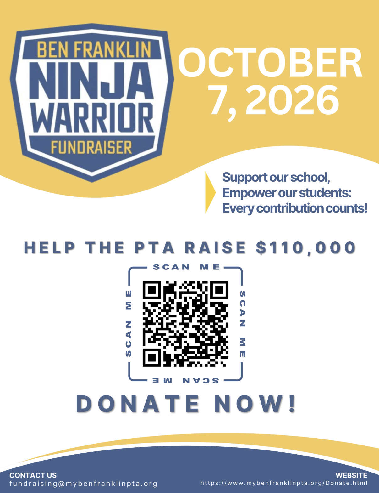

Ninja Warrior Run Fundraiser 2026
We're kicking off the year with our only fundraising event, the Ninja Warrior Run! It's a fun way for students to raise money for enhanced educational resources and activities at our school.

Event Date: October 7, 2026
Fundraising Goal: $113,000
That's just $155 per student — help your child reach out to neighbors, friends, and family for support. Donations can be made online below, or by cash/check (payable to Ben Franklin PTA) returned in the fundraising envelope your child will receive the week of September 14; please return envelopes by October 7. Don't forget to check with your company about matching — it doubles your impact! Just include a copy of the completed matching paperwork.
For the next few weeks, we'll share tips to make fundraising easy. Then on October 7th, students will celebrate by running an obstacle course during recess!
We can always use extra hands to make it a fun day for everyone — sign up to volunteer here.
Prizes and Raffle
- A pizza party for the class with the most donations
- Any class that reaches 100% donation participation before October 1, 2026 gets to run the obstacle course twice!
Support Our School
Every contribution counts! Your generous donations will help the PTA fund essential programs and activities that enhance our children's education and school experience. The funds raised during the Ninja Warrior Run help support a variety of activities and programs, including:
- Classroom resources and supplies for teachers
- Teacher training, appreciation, and professional development
- Recess equipment and gym supplies
- Field trips and special school events
- Enrichment programs like music, orchestra, drama, and STEM activities
- Literacy and math-focused events
- On-campus workshops, assemblies, and symposiums
- Books for the library and art supplies
See What Does the PTA Fund? for a full breakdown of where the money goes.
Giving Levels
| Level | Amount |
|---|---|
| Standard donation | $155 |
| Bronze | $300 |
| Silver | $500 |
| Gold | $1,000 |
| Unicorn | $2,000 |
| Custom amount | Any amount |
All donations are tax deductible. Visit the Ninja Warrior Run Fundraiser page to give at any level, including a custom amount.
Questions? Reach out to fundraising@mybenfranklinpta.org.
Thank you for your generosity and continued support of our students and school community — let's make this year's Ninja Warrior Run a great success!